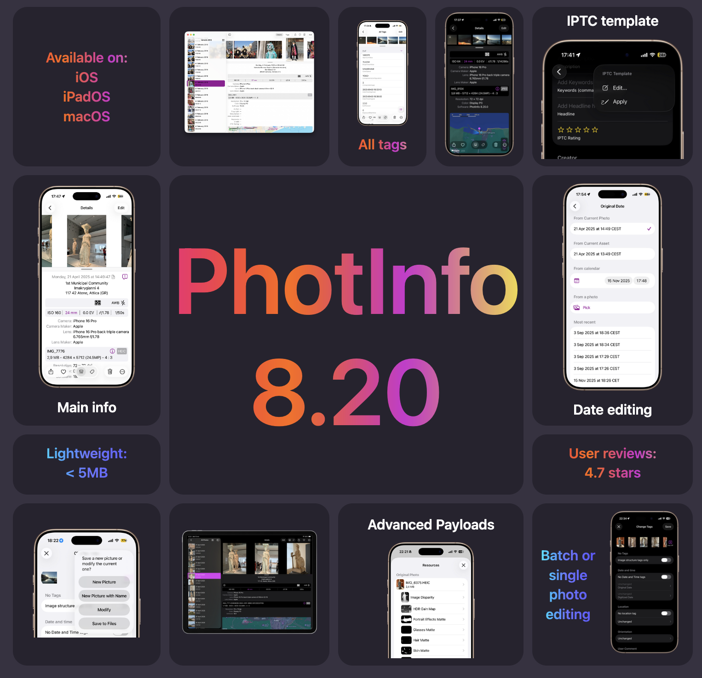

PhotInfo 8.20 - Press Kit

PhotInfo is an app to view, edit, and manage photo metadata - such as location, camera info, date, time, and more - right from your iPhone, iPad, or Mac.
⬇ Find app site and screenshots to download at the bottom of the page. ⬇
💡 Why PhotInfo
Every digital photo contains more than just pixels - it holds hidden metadata like shutter speed, camera model, ISO, focal length, and even GPS location. PhotInfo gives you full access to this information, letting you explore, understand, and take control of what your photos say about you.
Whether you want to edit or remove metadata for privacy, correct missing or inaccurate info, or simply learn more about how your photos were taken, PhotInfo makes it easy. It's a powerful tool for photographers, teachers, and anyone who wants to get more from their images - or just keep their photo library tidy.
Real users include photography instructors and enthusiasts who use PhotInfo to improve their technique or teach others.
🏅 What makes this app unique
- Detailed metadata access (Exif, Tiff, IPTC…)
- Human-readable + raw formats
- Batch editing of multiple photos at once
- The IPTC metadata editor with a template
- Simple and following iOS UI conventions
- Actively maintained since 2013
- Lightweight: <5MB
🚀 Features
With PhotInfo you can:
- View all the tags (Exif, Tiff, IPTC, etc.) from a photo, displayed either raw or in a human-readable format
- Display an image along with its main tags and a map of the location in a single view
- Share an image with or without tags
- Copy key data or content of individual tags
- Share all tags in raw, human-readable, or JSON format
- Edit or create copies of images with modified tags
- Modify IPTC tags using values saved in a template
- Create a minimized copy of the image preserving only essential tag data (e.g., size, resolution, orientation)
- Duplicate photos with custom names
- Edit batches of photos
- Edit date and location using a convenient editor that lets you choose from different sources such as free input, calendar, map, other photos, and recently used data
- View where the photo was taken in various ways: map, address, coordinates
- Favorite or delete a photo quickly
- Scroll efficiently through iOS device albums
- View and navigate burst photos (iOS only)
- Access and share associated files such as original images or live photo videos
- View advanced image payloads like Semantic Segmentation Mattes and HDR Gain Map data
- No data is shared; only photo coordinates are sent to Apple's servers to retrieve a human-readable address - and nothing else leaves your device. Starting from version 8.21.0, you can disable the reverse geocoding feature if you prefer not to send any coordinates.
- View the tags directly from other apps with the PhotInfo's Extension
PhotInfo app is in constant development, so new features will be added soon. Download now and stay tuned!
📫 Contact
Have questions or want a promo code? Send an email at qebapps@gmail.com.
You can find the latest news about PhotInfo on the full changelog or you can follow us on X, Mastodon or Bluesky.
📜 Version History Highlights
8.0: IPTC Editing, UI Refresh, Advanced Payloads
Version 8 introduced extensive IPTC tag editing with template support, a redesigned UI with settings integrated into relevant views, and improvements that make the app faster and smaller. Advanced image payload support was added, enabling viewing of data such as Semantic Segmentation Mattes and HDR Gain Maps for deeper insight into modern photo formats.
The app is continuously evolving and improving, increasingly using SwiftUI and keeps pace with changes in the operating system’s user interface.
7.0: New UI
A new and simpler UI arrives in version 7.0: map and details views join in one; the toolbar moves to the bottom on iPhone and to the top on iPad and Mac.
6.50: Batch Editing Arrives
One of the most requested features from users became reality: editing multiple photos at once. This version made it easy to apply changes across a set of images, saving time and effort.
6.10: Welcome to the Mac
With version 6.10, PhotInfo arrives on the Mac. The UI is tweaked for the Mac: it edits only the pictures in your Photos Library (the ones you see in the native Photos app). PhotInfo for Mac shows all the tags contained in these images and let you modifying the main tags.
6.00: A complete rewrite
After 7 years on the App Store, PhotInfo was entirely rewritten in Swift to ensure smoother performance and long-term maintainability. This version, based on the "PhotInfo NG" project, replaced the original Objective-C codebase.
February 2013: 1.00
PhotInfo was launched on the App Store on 7h February 2013.

🔗 Links

| Screenshots | iPhone 6.9" | ⬇️ zip file |
| iPhone 6.5" | ⬇️ zip file | |
| iPad 12.9" | ⬇️ zip file | |
| on Mac | ⬇️ zip file | |
| Icon | Hi-Res icon | |
| Site | PhotInfo | |
| Privacy Policy | ||
| App Store |
|
|
|
|
{kind=link}
✅ Requirements
iOS 17.0, iPadOS 17.0, macOS 14.0 (Sonoma) or later.
A single purchase unlocks PhotInfo on every supported platform.